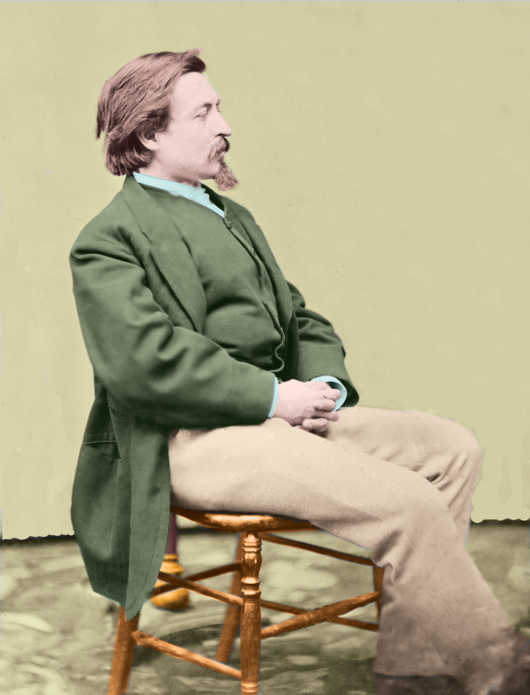
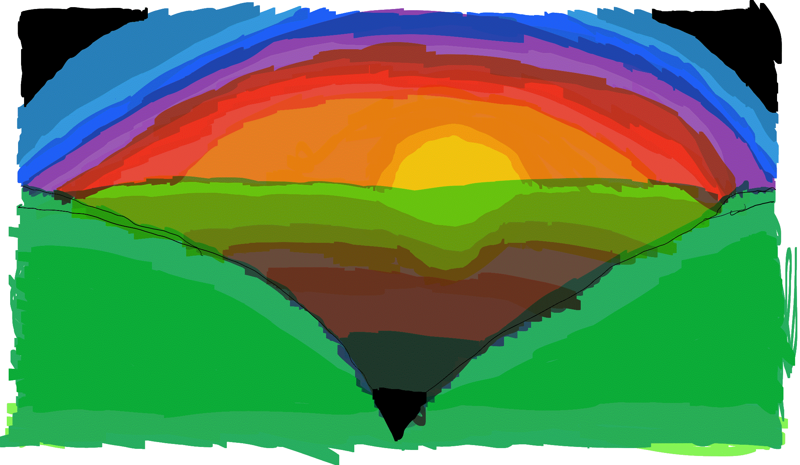

Biography
Christopher Rojano is a student at Seminole State College of Florida. He is studying towards his Bachelor's Degree in Fine Arts. His focus is taking courses that will help him develop and enhance in Computer Animation. He is very detail-oriented and a perfectionist in his work. He has a passion for drawing and the arts.
Skills
- HTML
- CSS
- JavaScript
- Web Images
- Photoshop
- User Interface Design
- User Experience
- Web Development
- Time Management
- Communication
Software/Hardware
- Illustrator
- After Effects
- Photoshop
- Character Animation
- Maya
Social Media/Web
Go to my GitHub Site
Go to my Facebook site
Work Samples

A magical and spectacular holiday store for the Big Christmas Sale is called "Big Christmas Spectacular." You can find Christmas supplies, trains, collectibles and Christmas trees. A place where you can spend time with your family and friends to shop your holiday favorites.

Thomas Nast was an American-German editorial cartoonist. This picture was adjusted in color.

This is a cartoon dog named Marvin, who does tricks and sounds like a very silly clown.

This is an image of a blue house. Similar to a Disney kids show called "Bear in the Big Blue House."

A beautiful sunset over the mountains. The colors are to look peaceful and romantic.